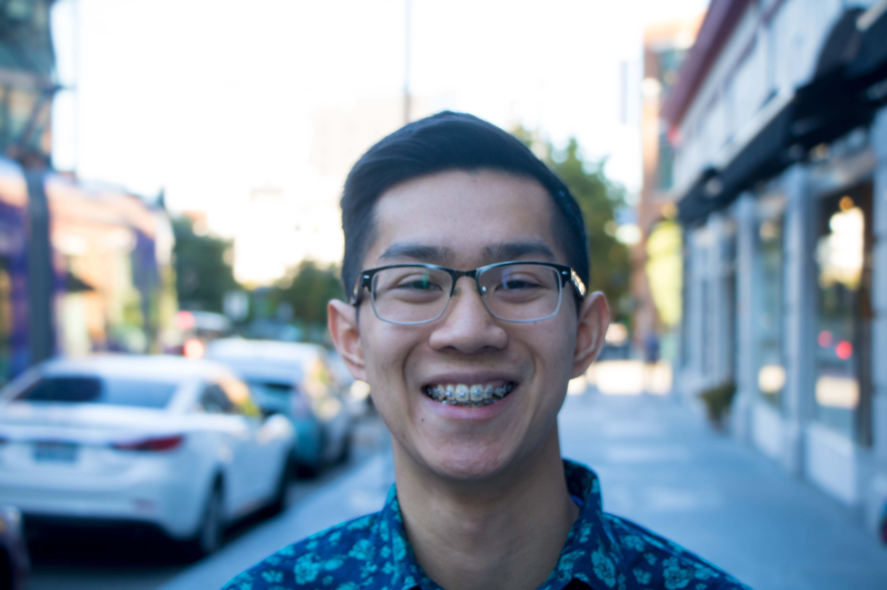

I am a
Student | Designer | Researcher | Creator
I am a Junior at the University of Washington, studying Human Centered Design and Engineering. I am passionate about experience and interaction design. I strive to learn from my experiences in order to create people friendly products and interactions.
I love to draw and design in my free time. My current project is creating a personal clothing line called Blank
selling quality non-blank tee-shirts (because if my logo is on the shirt, then the shirts aren't blank). I also
love to keep up with the NBA and soccer. I consider myself an adventurous person, and my current adventures are
centered around tattoos.
